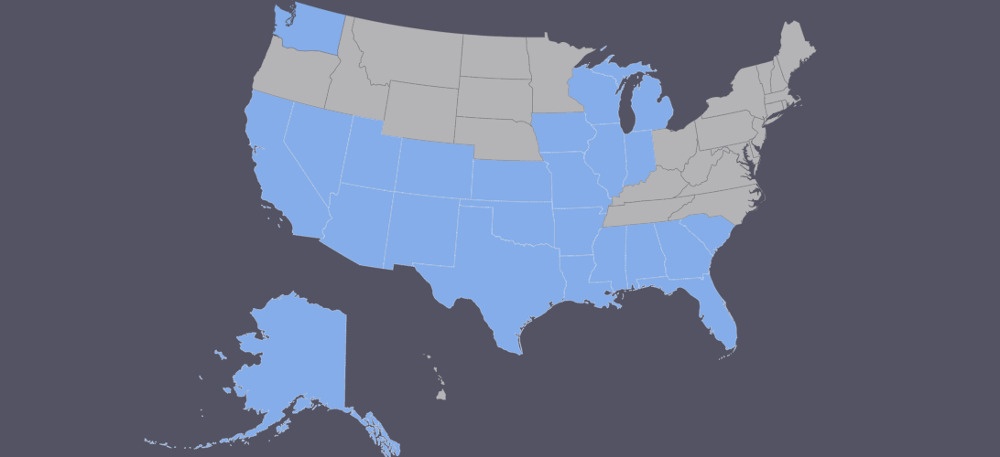

Leo Ashcraft III
Road Trip: The Beginning / Post-Covid
June 15, 2021
I've been married for a little over five years and have an almost two year old. We love to travel and recently crossed a few more states off of our list. It was our first time traveling with a baby and our last time not having to pay for her to fly! That was nice... If you're ever in Milwaukee, Wisconsin, I definetely suggest stopping by Blue Bat Kitchen & Tequilaria - it was absolutely delicious and even the house margaritas were above any expectations for a "house" margarita. Get a pitcher, you won't regret it...
I'm definetely a foodie so it wouldn't be proper if I didn't provide a picture of food... Here we have that margarita we were just talking about, of course... Along with some Fried Brussel Sprouts and Milwaukee Street Corn. Unfortunately the "Bag O' Chips" had already disappeared before the picture was taken but they were the best chips with some awesome seasoning on them. My daughter loved the easily accessible view just below the restaurant patio overlooking the Milwaukee River. The boats and ferries cruising by completely mesmerized her. Remember, it's all new to her too! If you want me to write out a lot of content, make sure it's on the topic of food.
1,353 Feet Above Chicago
June 15, 2021
Parking in Chicago is a @#?%! and I thought Dallas was bad... Aside from generally being difficult to find a parking spot close to your destination, get ready to pay a pretty penny for that spot even if it's on the side of the street. The parking app for Chicago requires an up front deposit that you'll never get back. So I guess the next time I'm in Chicago - over 900 miles away - I'll have a little cushion for parking. Forget about the parking garages, they're even more insanely expensive.
All ranting aside, The Skydeck was a great experience. We were staying in Waukeegan with a relative but made a quick drive from Milwaukee Airport to Chicago to sightsee a little bit after an early dinner. My daughter absolutely loved it, wasn't scared to go on the ledge at all while my stomach dropped just going to get her off the ledge! I did get a couple of great shots of the skyline, even though it was just my phone.
Galena - Northwest Illinois
June 15, 2021
Just look at that view... That was a very rewarding drive/hike. Yeah it's touched up a little bit but I assure you it's every bit and more majestic than that picture. Finally the sightseeing commences. East and Central Illinois was quite boring! West Illinois reminds me a bit of Austin, Texas (Hill Country) area but Austin is actually more "hilly" than Illinois. We stayed at the Eagle Ridge Resort & Spa for my wife's cousin's wedding and had a great time. I'd definetely recommend it especially if you love to golf. Plenty to do even if you don't play and the wife won't complain getting left behind at the spa for the day either... The Blue Spruce is thrown in there because it's my favorite tree and nowhere to be found in Texas... After our stay we took a drive down the Mississippi River route and through Clinton, Iowa before heading back across Illinois, into Indiana and finally to Michigan...
Lake Huron and Our Introduction to Catan: The Boardgame
June 15, 2021
Our final destination. We visited a friend's cabin just north of Lexington. This was my daughters first time on a beach and once again, she wasn't afraid of anything and ran right to the water. The water was extremely cold - I would say 60 degrees. She didn't even care and we weren't willing to go further than knee deep with her so it was a constant fight keeping her closer to shore. Keep in mind she's not even two! We had a great time and we were introduced to the board game Catan which I've become absolutely obsessed with.
Views from the lake, comfort from the fire and a brand new (to me) boardgame was just what I needed to finish off a vacation from vacation. Apparently it's been around for 25 years and I've never even heard of it. It's an introduction to European boardgames or so I've read... It's not as expansive or require as much thinking as something like Dungeons and Dragons (which I don't really care for) and has tons of expansions and a cult-like following on Reddit.
The Flight Back Home
June 15, 2021
What's the best way to make sure your child isn't going to be a nuiscance on the plane? Aside from the 3 hour delay, I'm pretty sure these moving walkways were made especially for this reason... I wore her out letting her run around on these making several laps. She was out before takeoff!
So while I had flown to Michigan before and my wife had flown to Wisconsin and been to Illinois as well, I crossed off another four states and my wife crossed off three. Aside from the chart below, I've also been to Mexico, the Bahamas and Brittish Columbia! I hope to visit Hawaii or the Northeastern states next.

Leo30
Smith County, Texas
I know HTML and CSS pretty well but mostly pre-HTML5 and CSS3. I've dabbled in other languages such as PHP and SQL - enough to create working sites for a side hustle but I'm definetely rusty... I'm ready to increase my knowledge enough to do this full time!